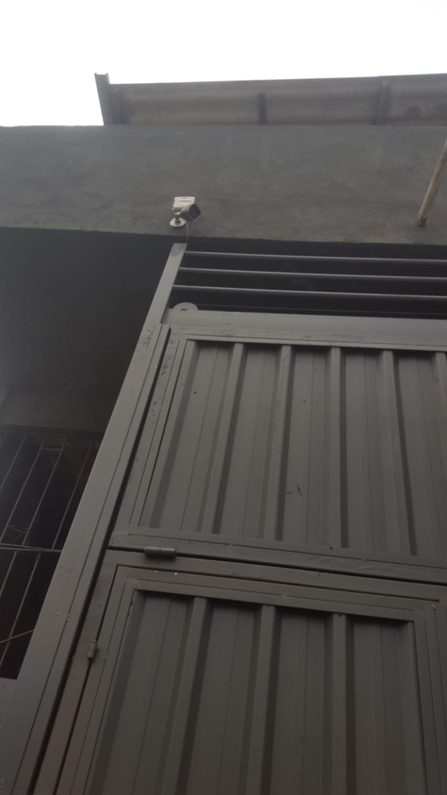
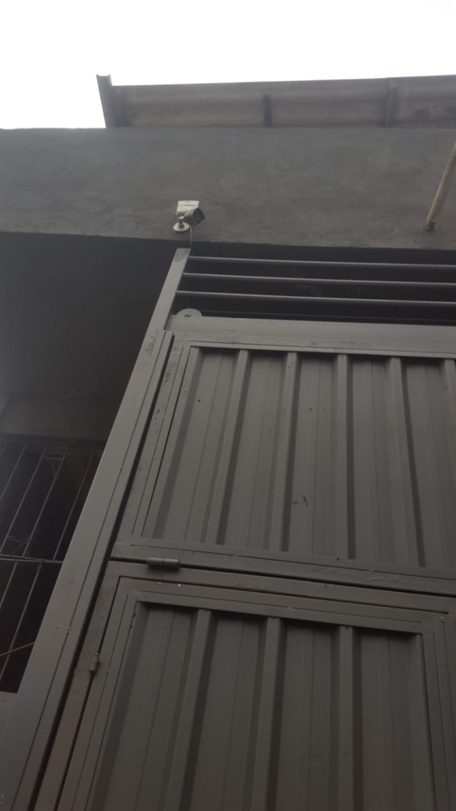

.svg)
Por que investir em câmeras de segurança?
Em um mundo cada vez mais conectado e dinâmico, garantir a segurança da sua casa ou do seu comércio deixou de ser um luxo e se tornou uma necessidade. As câmeras de segurança evoluíram muito — e hoje oferecem mais do que apenas imagens: elas entregam monitoramento em tempo real, alertas inteligentes, gravação em nuvem e acesso remoto pelo celular.
Prevenção é sempre o melhor investimento
Estudos mostram que locais com câmeras de vigilância têm menor índice de furtos e invasões. A simples presença das câmeras já serve como um fator de dissuasão. Ou seja: só de estarem visíveis, já reduzem os riscos.
Tranquilidade 24 horas por dia
Com as tecnologias atuais, você pode monitorar sua casa ou empresa de qualquer lugar do mundo, direto pelo seu celular. Basta ter internet e pronto — você vê tudo ao vivo, recebe alertas e pode até falar com quem estiver no local, dependendo do modelo da câmera.
Baixo custo, alto retorno
Ao contrário do que muita gente pensa, hoje em dia é possível instalar um sistema de câmeras completo com excelente custo-benefício, graças à evolução dos equipamentos. Além disso, uma instalação profissional evita retrabalho, falhas ou pontos cegos.
Sobre
Instalação profissional de sistemas de monitoramento por câmeras, com equipamentos de alta resolução, configuração personalizada e suporte especializado para comércios e residências. Segurança eficiente com tecnologia de última geração.
Serviços
Câmeras instaladas, configuradas e
funcionando perfeitamente — serviço completo para sua tranquilidade.


 
